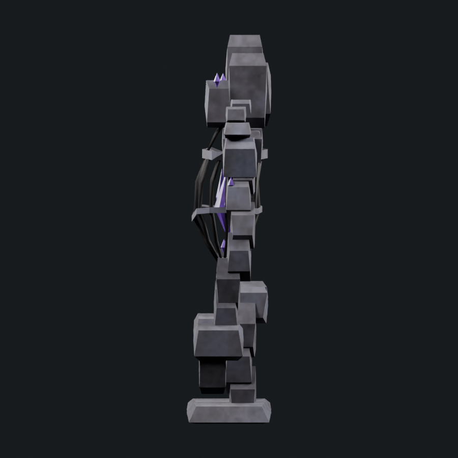
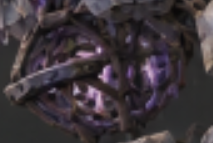
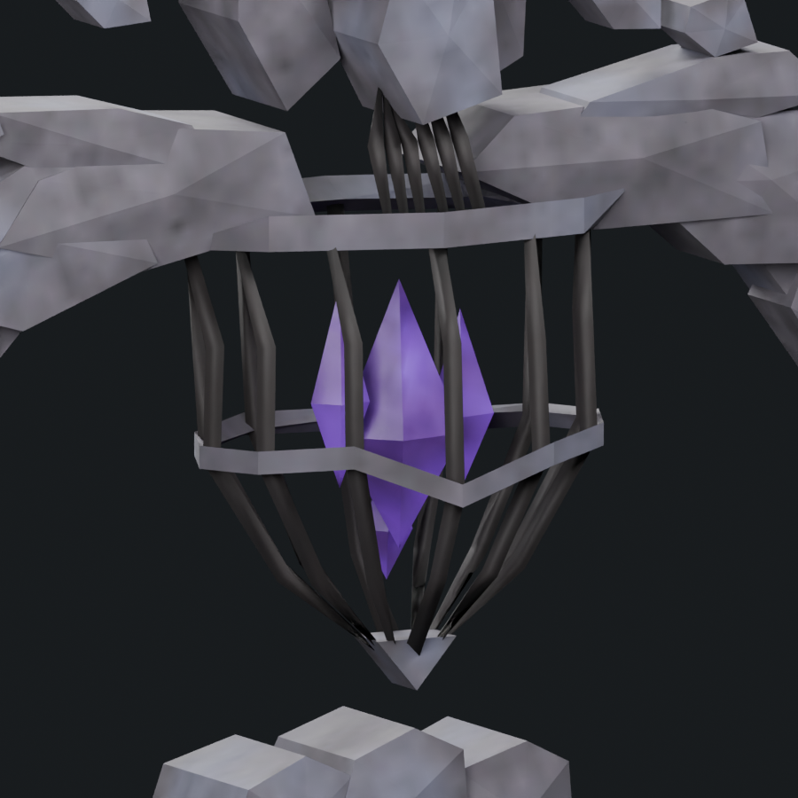
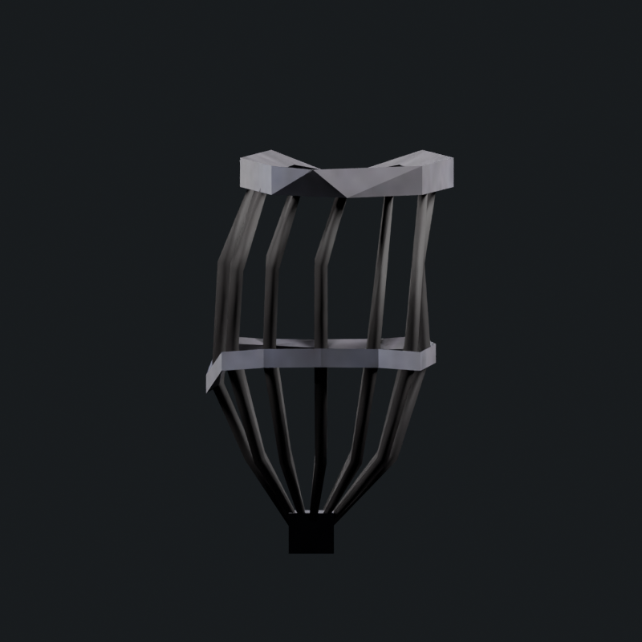
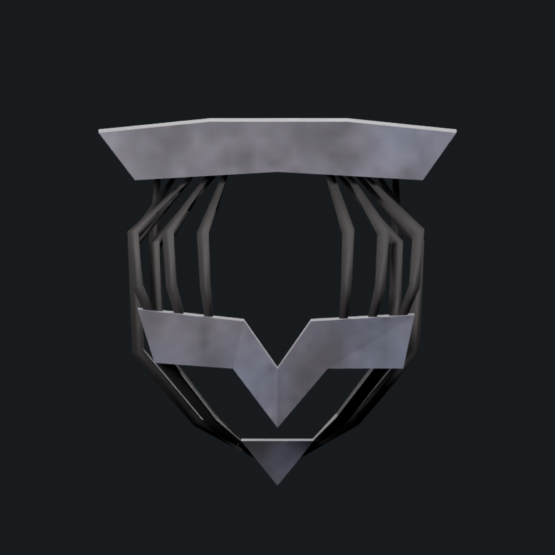
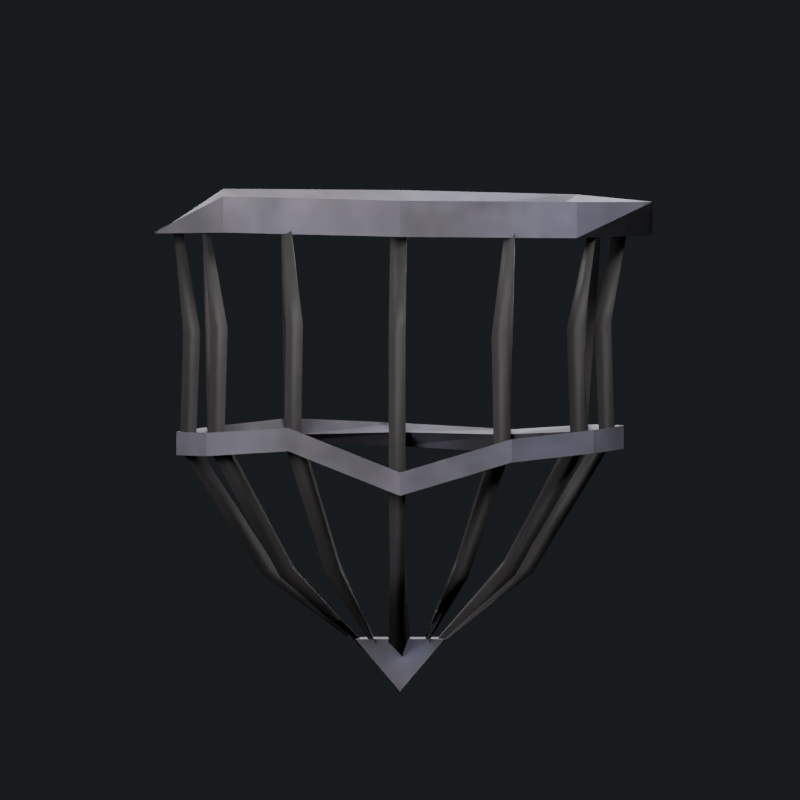
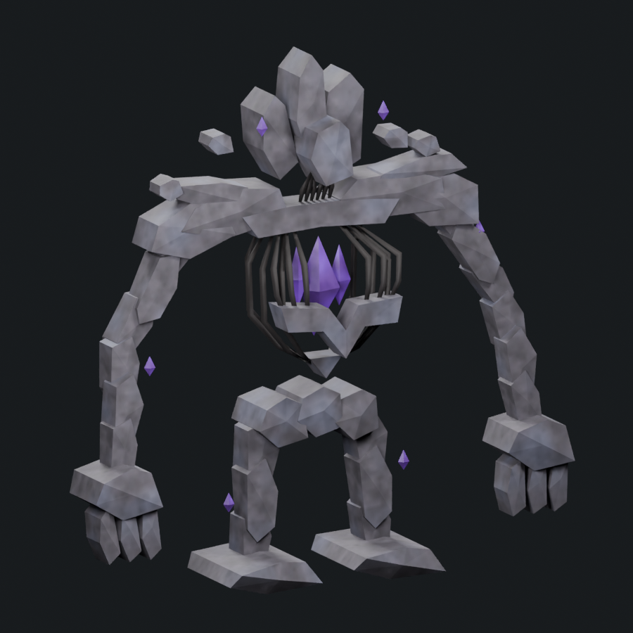
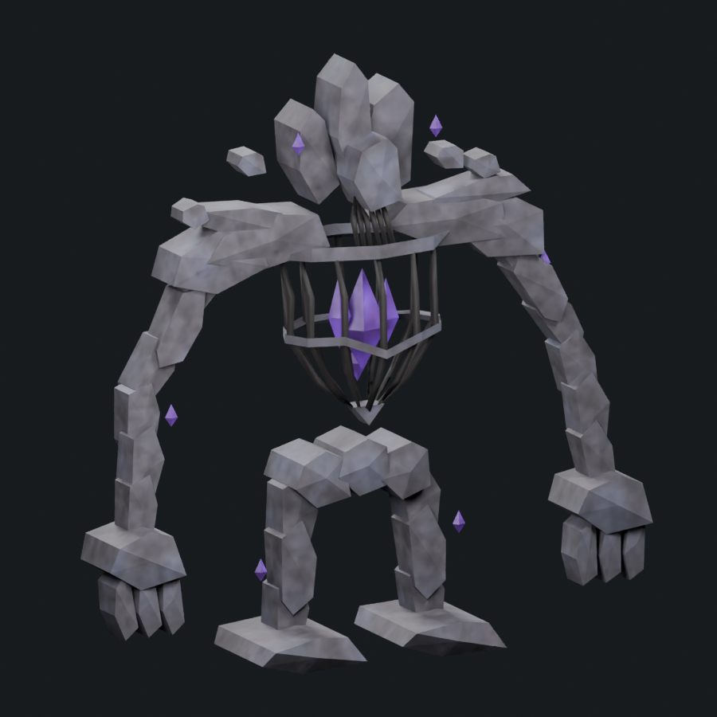

Side orientation corrected: the creature's front faces left, matching the concept. Both r5/r6 whole-model and isolated side comparisons use that direction. These are new camera renders of the saved models.

The previous thick front plate has been replaced by a narrow sculpted stone band that closes around the entire torso. Twelve continuous bowed metal ribs pass behind it into the lower bowl. The central V is small and follows the band. The upper collar is also a closed stone ring: its left and right sections seat into the larger upper torso stones, and the torso and neck ribs attach to that ring.
1,800 triangles · 1.500× native Stone Golem · soft cap 1,800. One mesh/material, four 512px maps, eight retained bones and seven actions. Fifty support contacts pass 35 sampled poses; the middle band and upper collar are each one closed connected ring. This is a torso candidate for visual review. Fracture, corrosion and weathering detail remain unfinished.




These diagnostics extract the torso ribs, band, collar and lower keel from each saved model. Arms, shoulders, head, neck and the crystal cluster are hidden for visibility. The source models are unchanged.






The r5 head, shoulders, limbs, rig and actions remain. Neck roots are reseated into the upper ring. Native loader admission and live performance are separate pending checks. Rift Titan remains under visual review; the adequate boss tally remains 1/6.
Editable Blender model · Skinned export · Attack pose · Geometry/export checks · Saved support checks · Closed band checks · Collar ring checks · Diagnostic provenance · Construction · Source provenance